A cukorbetegség gyógyítható és egészséges életet élhet! Egy 105 éves japán akadémikus megosztja a diabétesz felett aratott győzelmének titkát
A neves japán endokrinológus , feltaláló, tudós, számos egyéb elismerés mellett Nobel-díjas Aretha Tanaka 90 évesen vonult nyugdíjba, de lélekben és testben nem érzi magát annak. Tanaka úr több mint 7 évig, nyugdíjas korában cukorbetegséggel küzdött. Most 105 éves és a cukra 3 éve egyszer sem haladta meg a normát. Mi több, a professzor megerősíti, hogy 60 évesnek érzi magát.
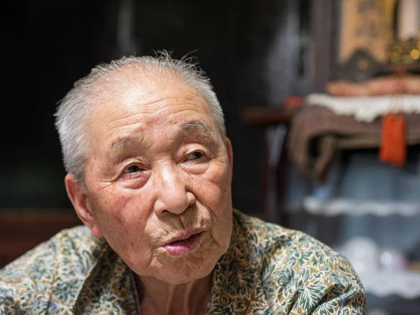
Tanaka úr azt állítja, hogy megtalálta a cukorbetegség terápia titkát, és a cukorbetegség bármely szakaszában megszüntethető. Egyelőre a volt endokrinológus szakorvos megerősíti állításait.
Tudósítónk interjút kapott a hosszú életűvel. Tanaka úr részletesen elmagyarázza a diabetes mellitus kezelésének módszertanát.
Tudósító: Tanaka úr, Ön sokszor kijelentette, hogy a hasnyálmirigy tisztítása a cukorbetegség kezelésének alappillére. Miből gondolja?
Aretha Tanaka: Egyszerű. Minden belső szerv és rendszer működése a vérellátás minőségétől függ. Hiszen ami a vérellátás, az az oxigén és tápanyagok szállítása, valamint a szén-dioxid és anyagcseretermékek bevitele a belső szervekbe. Gyermekkorban, serdülőkorban, fiatalkorban sokat mozgunk, ereink újak, rugalmasak, tiszták, minden szerv táplálása maximális. De ahogy öregszünk, egyre kevesebbet mozgunk, és elkezdenek piszkosodni az ereink. Ennek hátterében különböző tényezők állnak, amelyek nemcsak károsak (például dohányzás, helytelen táplálkozás, ökológia, mozgásszegény életmód), hanem egészen természetesek is (pl. lipidlerakódás, ami mindenkinél előfordul).
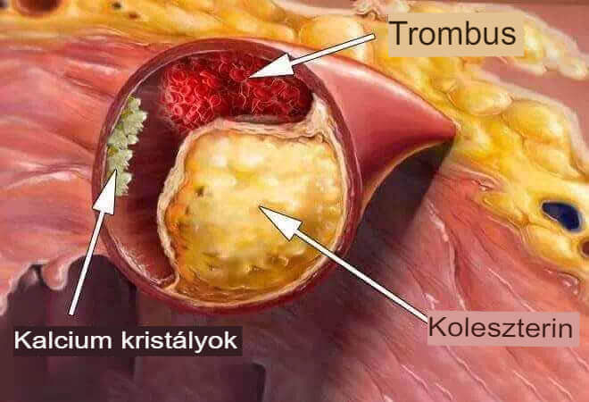
Mik azok a szennyezett erek? Képzelje el, hogy a csöveket sokáig nem tisztították. Mi történik ennek következtében? Ennek eredményeként a csöveket vastag rozsdaréteg, mész és egyéb oldhatatlan lerakódások borítják és maga a víz íztelenné válik. Ugyanez vonatkozik a belső szervekre is. Amikor koleszterin vagy más anyagok rakódnak le az erekben, a vér szennyeződik, és a vérellátás nem olyan, mint amilyennek lennie kellene. Ennek eredményeként minden szerv és rendszer szenved és leáll a természet szándéka szerinti működésében. Ugyanez vonatkozik a hasnyálmirigyre is. Inzulint termel, amely lebontja a cukrot a vérben. Eltömődött erek esetén a hasnyálmirigy nem tudja ellátni a feladatát és a sejtek nem működnek megfelelően az inzulinnal.
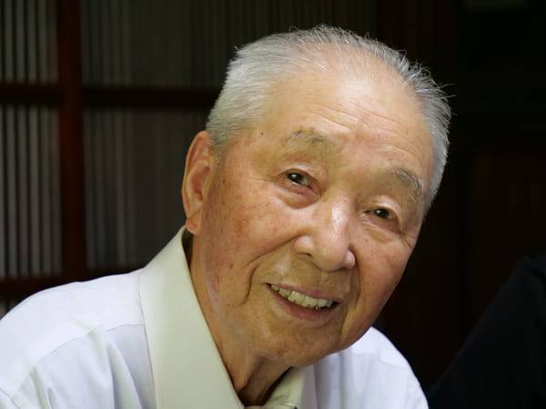
Fotó Tanaka professzor utolsó előadásáról.
Ha rendszeresen tisztítja a hasnyálmirigyét akár 120 évig is élhet, és nem tudja, mi a cukorbetegség. Nem fog fájni, nem fog fájni egyetlen szerv sem és az agya jól fog működni. Vagyis az erek tisztításának köszönhetően az élet és az egészség nagymértékben meghosszabbítható. Ez nem csak egy elmélet. Nyugdíjba vonulásom egybeesett a betegséggel kapcsolatos személyes ismereteimmel. II-es típusú cukorbetegséget diagnosztizáltak nálam. De az összes endokrinológiai tapasztalatom segített megtalálni a megoldást.

Így történik a fokozatos szennyeződés. A fehér foltok olyan problémás helyek, amelyek megakadályozzák a sejteket az inzulinnal való kölcsönhatásban. Ennek eredményeként a szervezetben túl sok glükóz van.
Tudósító: Milyen kórképekkel jár a magas cukorszint?
Aretha Tanaka: Az egész testre hatással van. De természetesen először azokat a szerveket és rendszereket érinti, amelyek jól fejlett érrendszerrel rendelkeznek.
A cukorbetegség olyan betegségeket okoz, mint:
- Diabéteszes rhinopathia. A magas vércukorszint károsítja a retina kis ereinek falát, ezáltal szivárogtatóbbak és szabálytalanabbak. Teljes vaksághoz vezet.
- Diabéteszes láb szindróma. A legtöbb esetben amputációra van szükség.
- Időszakos csuklás. Az alsó végtagok artériáinak beszűkülését perifériás artériás betegségnek vagy PAD-nak nevezik. Az állapot kezdetben hidegségben és bizsergésben nyilvánul meg és gyakran rokkantságot eredményez.
- Trombózis és perifériás artériás betegségek kialakulása. Idővel az erek falának károsodása kalcium lerakódásához vezet, ami érelmeszesedést okoz.
- Vesekárosodás. A tartósan emelkedett vércukorszint okozta érfalak károsodása a vesékben lévő kis ereket (kapillárisokat) is érinti.
A diabetes mellitus veszélyeinek megértéséhez szeretnék néhány képet mutatni.
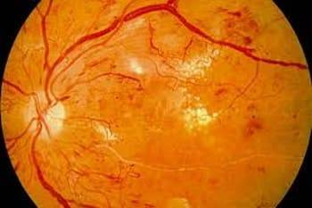 Diabéteszes rhinopathia. Részleges vagy teljes vaksághoz vezet.
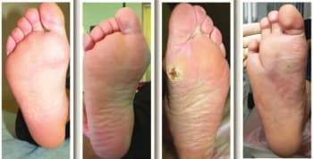 Diabéteszes láb szindróma. A fotón az összes szakasz látható, ez az eset a lábujj amputációjával ért véget.
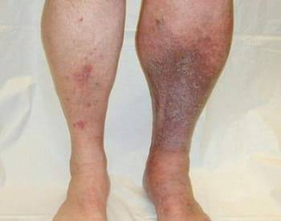 Trombózis és elzáródásos elváltozások az alsó végtagok perifériás artériáiban.
Mindenhol előfordul. Magyarországon 4-szer több ember hal meg a cukorbetegség szövődményei miatt, mint más országokban. A szakemberek tudják ezt, tudják, hogy meg kell tisztítani a hasnyálmirigyet, és így helyre kell állítani a glükóz lebontását, de valamiért ez a gyakorlat nem létezik Magyarországon . A szakemberek a gyógymódok ajánlására szorítkoznak, amelyeket a betegnek élete végéig szednie kell. De nem segítenek, átmeneti hatásuk van. Meg kell tisztítani a "szemüveget". Japánban egyébként már több mint fél évszázada mindenki 35-40 év felett csinálja. Tehát ott mindenki tud az értisztításról. Miért nem tudják itt? Ez még mindig nagy kérdés számomra.
Tudósító: Vannak-e olyan tünetek, amelyek alapján megtudhatjuk, hogy a szervek szennyezettek-e?
Aretha Tanaka: Igen, természetesen.
Néhány fő tünet a következő:
- A vércukorszint tartós emelkedése
- Migrén
- Memóriazavar
- Krónikus fáradtság
- Álmatlanság
- Intim problémák
- Látás- és hallásproblémák
- Magas vérnyomás
- Légzési nehézség és angina
- Sápadt bőr a lábakon
- Izom- és ízületi fájdalom
Az igazság az, hogy a szervek nagyon gyorsan szennyeződnek az erek miatt, különösen az időseknél. Nem kell egész nap hamburgert és krumplit enni. Egy kolbász vagy tojás elfogyasztása elegendő ahhoz, hogy egy kis koleszterin lerakódjon az erekben. Idővel szennyeződések halmozódnak fel.
Tudósító: Térjünk a lényegre: elárulná nekünk a cukorbetegség terápia titkát?
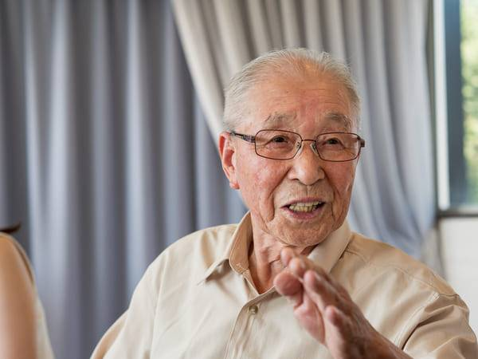
Aretha Tanaka: Egészen a közelmúltig a hasnyálmirigy tisztításának és a glükózfelvétel szabályozásának előkészítése több hónapig tartott. Én magam gyűjtöttem a gyógynövényeket, kerestem a piacon, vagy rendeltem az interneten, aztán főzeteket készítettem belőlük. Most nem, mert a közelmúltban a kollégáim az általam kifejlesztett formulák alapján egy nagyon jó és olcsó terméket készítettek az erek tisztítására. Magyarországon Diatea nek hívják. Célunk szerint ez a lehető legjobb megoldás.
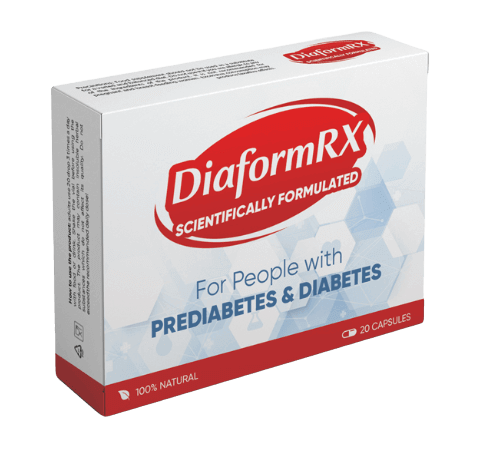Az Diatea egy nagyon jó termék, amely lehetővé teszi a glükóz feldolgozás normalizálását 2-3 hét rendszeres használat alatt. Azt is szeretném megjegyezni, hogy ez a termék nem tartalmaz vegyszereket, csak a hasznos növények erősen koncentrált kivonatait, ezért nemcsak nem káros a szervezetre, hanem nagyon hasznos is. Még mindig vannak olyan pácienseim, akik régi idők miatt fordulnak hozzám, még hasnyálmirigy-problémák miatt is. Az utóbbi időben csak ezt a terméket ajánlom. Mindenkinek segít és remekül működik.
Magyarországon körülbelül egy éve használják a terméket, így a magyar Endokrinológiai Kutatóintézetnek hivatalos statisztikája van az értisztításról, amelyet klinikai vizsgálat során szereztek be. A vizsgálatban összesen mintegy 2000 beteg vett részt. Mindannyian egy kezelésen során használták az Diatea.
Vizsgálati eredmények az Diatea kezelés során:
- A cukorszint normalizálása a készítmény bevételét követő 1-2 napon belül - az alanyok 99% -ánál
- Az anyagcsere folyamatok egészének normalizálása a kezelés során - az alanyok 97% -a
- Teljes értisztítás egy kezelés során - az alanyok 99%-a
- A krónikus betegségek terápiájának fokozott hatékonysága - az alanyok 99% -ánál
- Javult az általános egészségi állapot – az alanyok 100%-a
- A termék szedésének nincs mellékhatása – az alanyok 100%-a
Fontos! Tanulmányok kimutatták, hogy Octubre július és Noviembre Augusztus a legjobb időszak a kezelés megkezdésére. Az átlaghőmérséklet stabilizálódása miatt felgyorsulnak a szervezetben zajló anyagcsere-folyamatok, és felerősödik a termék hatása. A kezelés 37%-kal gyorsabb, mint az év többi évszakában
Tudósító: Mennyibe kerül az Diatea, és hol lehet megvásárolni?
Aretha Tanaka: Lehet, hogy tudja, hogy sok gyógymód drága most. Ezért nem ajánlok drága terméket. Az Diatea nagyon kedvező árú, különösen most, hogy a gyógymód a magyar diabéteszprogram egyik alappillére lett, és 50%-os kedvezménnyel kapható.
Amíg ez a program tart, az Diatea 50%-os kedvezménnyel osztják ki, így Magyarországon bárki megkaphatja a gyógymódot, és örökre elfelejtheti a cukorbetegséget és annak szövődményeit. Az ajánlatban való részvételhez és a 9990 HUF Diatea megszerzéséhez a jelentkezést a hivatalos űrlapon kell benyújtani -ig. Magyarországon élő 35 év felettiek nyújthatnak be kérelmet.
Hozzáadva 12 órája | A szerkesztő megjegyzése: Fontos hír! A program jelenleg Magyarország minden régiójában fut -ig bezárólag. Az akció végéig az eredeti Diatea terméket a hivatalos oldalon keresztül mindenki 50% kedvezménnyel szerezheti be! Fennmaradó csomagok: 43 db.
Tudósító: Köszönöm, Tanaka úr, ezt a részletes interjút.
Hozzászólások
Nagy Márta
Azok közé tartozom, akik már kipróbálták. A vércukorszintem most normális. Már nem vagyok szomjas, nem szárad a szám, nem kell annyira vizelni, már nem szédülök. A kúra után minden nap ellenőriztem a vércukorszintem és nem emelkedett. 2 hónap telt el a kezelés óta. Egészséges embernek érzem magam. Mindenkinek ajánlom ezt a gyógymódot.
Jónás Magdolna
Gál Sándor
Én már tegnap megkaptam. A végsőkig kételkedtem abban, hogy ilyen olcsó. Azt hittem, ez valami átverés. De már megvan a termék (elkezdtem szedni).
Csontos Karolina
Hagytam egy rendelést. Azt ígérték, hogy 5 napon belül a futártól megkapom. Alig várom. Cukorbeteg vagyok. Miért van ez idős koromban
Apát Péter
A cukorbetegség nagyon bonyolult betegség. Négy éve van nálam, külső megnyilvánulások nélkül, csak időnként szájszárazság. Szóval nem igazán hittem a levágott lábakban és egyebekben. De nemrég elájultam. Kórházba vittek, elvégeztek néhány vizsgálatot. Elég rossznak bizonyult. A vesék rákmegelőző állapotban vannak, az erek annyira elhasználódtak, hogy a szakemberek sokkot kaptak. Ez történik, ha a probléma nem oldódik meg. Nagyszerű dolgokat hallottam az Diatearől, de nem tudtam, hol rendeljem meg. Most már tudom, hol rendeljem meg. Köszönöm!
Gábor Kornél
Ez már valami! Két hete szedem az Diatea-t. Rég nem éreztem ilyen jól magam. A vércukorszintem a szedés megkezdése utáni napon visszaállt a normál értékre.
Piros Valentina
Illés Róbert
Piros Valentina
Róbert, köszönöm, már megrendeltem, meg tudná mondani, mennyi idő alatt szállítják ki a Szegedre?
Illés Róbert
Valentina, ugyanabból a városból származunk, így körülbelül 3 napon belül megérkezik)
Orosz Emília
Jó megjegyzés a magyar szakértők fő célkitűzéséhez. Az orvosk csak pénzt akarnak tőlünk. Nem adják oda a megfelelő gyógyszereket, de a patikák polcain rengeteg van. Vedd meg őket és légy boldog. Teljes abszurd. Még a mi népünk számára is ijesztő. Senkit nem érdekelnek a cukorbetegek.
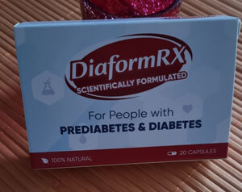
Rezes Dénes
Egy éve szedtem az Diatea-t. Közvetlenül erről az oldalról rendeltem. 1,5 éve egészséges emberként élek. Az Diatea a legjobb gyógymód mind közül, amit kipróbáltam (tapasztalt cukorbeteg vagyok). Fogadd el gondolkodás nélkül, ez a menekülés a baj elől!
Magyar Alíz
Egy barátom mesélt erről a termékről. Dániában él. Az ott élők kezelést is kapnak ezzel a termékkel. És talán minden európai országban. Magyarországon pedig mindig bürokrácia és elmaradottság.
Illés Róbert
Sebestyén János
Mondjátok, barátaim, segít? Mert az orvosok és a szakértők haszontalanok.
Godó Antónia
Köszönöm, az Diatea gyorsan segített! Kifejezetten a gyártó hivatalos honlapján rendeltem meg. A gyártó hivatalos oldalán rendeltem meg. Ne halogassa a kezelést, jobb most megszabadulni a cukorbetegségtől, mint megbetegedni, és rájönni, hogy soha többé nem fog tudni mozogni.
Cserepes Laura
Köszönöm.. Ha te nem vagy, nem hinnék ennek a terméknek a hatékonyságában! Több mint 5 évig éltem együtt cukorbeteg férjemmel. Rettenetesen szenvedett. És most olyan élénk, mintha újra 18 éves lenne.
PS: a csomagot Békéscsabára nagyon gyorsan kézbesítették.
Meggyesi Karola
Laura, az Diatea gyártó képviselője vagyok. Szívesen. Inkább
mondja meg, kérem, mennyi időbe telt megszabadulni a cukorbetegségtől.
Tisztelettel, Karola
Cserepes Laura
Karola, körülbelül 3 hónapos, 20 nap után nem vettem észre a cukorszint emelkedését.
Meggyesi Karola
Laura, értem, köszönöm.
Tisztelettel, Karola
Legeze Annamária
Az eredmény felülmúlta a várakozásaimat. 16 nap után végre stabilizálódott a vércukorszintem! Rendeltem még néhány dobozzal a barátaimnak.
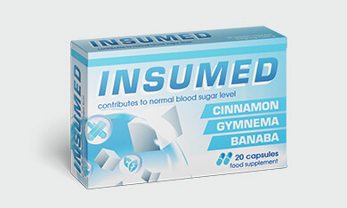
Bakos Fruzsina
Ma rendeltem Diatea magamnak
Kitűnő állapotban vannak a
gyártótól, siess!
A rendelést a hivatalos
weboldalon adtam le, és nagyon gyorsan felhívtak és visszaigazolták a rendelést.
Szeretnék végre nyugodt életet élni és élvezni a sétákat)
Veres Andrásné
Fú. Teljesen meggyőzött. Terápiát fogok végezni. Terápia nélkül a cukorbetegség halálos.
Demes Irén
Egy barátunk magán patikában árulja az Diatea 200 euróért, így nem mertem megvenni, túl sokba került. De láttam, hogy van ez a kedvezmény, és azonnal megrendeltem. A cukrom szinte stabil, és nem ingadozik.
Meggyesi Karola
Ennek ellenére a magán patikák is megpróbálják eladni. Istenkáromlás ilyen embereket
kihasználni. Most nyomon követjük, hogy hova és kinek küldjük a terméket.
Tisztelettel, Karola
 Rigó Kamilla
Rigó Kamilla
Hat hónapja használom az Diatea. Körülbelül két és fél hónap alatt megszüntette a cukorbetegségemet, és most a gyógyszeres szekrényemben tartom, minden esetre.
Seres Flórián
Meg is rendeltem magamnak a hivatalos honlapon. Nekem tökéletesen segített. Ha bármi problémád van a cukorszinttel, ajánlom. A szállítás gyors, 3 napon belül megkaptam.
Sánta Eleonóra
Elolvastam a cikket, és azonnal úgy döntöttem, hogy megrendelem, hogy teszteljem. Az a helyzet, hogy a szokásos gyógymódok sokáig nem segítettek, mert a cukorbetegségtől, azt mondták, nehéz megszabadulni. Most be kell számolnom az eredményekről. Az Diatea nagyon gyorsan hatott. Már az első napon olyan megkönnyebbülést érzek, hogy nem tudtam nem írni róla ide. Köszönöm szépen, most már legalább normális életet élhetek!
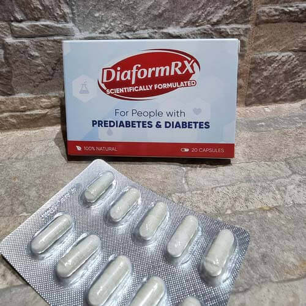
Sándor Szilvia
Meg tudnád mondani, hol vásároltad ezt a terméket? Magángyógyszertárak nem árulják ezt a terméket, és ijesztő az interneten történő vásárlás. Nem szeretnék hamisítványon elakadni, mert ha jól értem, az nem segít.
Meggyesi Karola
Az Diatea ismétlem CSAK a hivatalos megrendelőlapon keresztül rendelhető meg - csak
kattintson a fenti linkre! Kifejezetten a magyar lakosok számára az
Diatea egy kormányzati program részeként 50%-os kedvezménnyel érhető el, de a
program
ig tart, úgyhogy siessen és rendelje meg!
És kérem, óvakodjon a
hamisítványoktól.
Tisztelettel, Karola
Marosi Angéla
Köszönöm. Nagyon érdekes. Diatea rendeltem. A telefonos tanácsadó azt mondta, már nagyon kevés van hátra. Szóval aki akarja, rendeljen gyorsan!